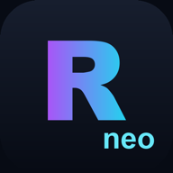
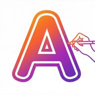

 Recovery Neo Android で USB メモリ・SD カード・USB-C SSD から削除したファイルを復元 — 読み取り専用、スマートフォン内で完結。 Android · Google Play近日公開
 AnySketch Neo AR Trace Drawing 描画のための AR トレース: カメラであらゆる参考画像を紙の上に投影してなぞれます。 Android · Google Play iOS · App Store